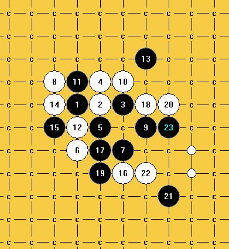

求大哥大姐们指点一二！
#1 求大哥大姐们指点一二！ 作者：来来往往 发表时间：2012-7-22 7:36:10
这个寒星11的一些下法小弟还没能弄明白，希望指点一二！［此帖子已被 来来往往 在 2012-7-22 7:37:30 编辑过］
［此帖子已被 来来往往 在 2012-7-22 9:00:24 编辑过］
［此帖子已被 来来往往 在 2012-7-22 9:01:09 编辑过］
#2 Re:求大哥大姐们指点一二！ 作者：奇林 发表时间：2012-7-22 8:05:33
11走这边
#3 Re:求大哥大姐们指点一二！ 作者：来来往往 发表时间：2012-7-22 8:12:27
11走右边那个我还是知道必杀的，我是想看看这个11的变化。黑也很强，只是还有上面那些点老觉得棋盘太小了，没法杀，其他点都被黑杀了。［此帖子已被 来来往往 在 2012-7-22 8:13:04 编辑过］
［此帖子已被 来来往往 在 2012-7-22 8:15:27 编辑过］
#4 Re:求大哥大姐们指点一二！ 作者：自来水 发表时间：2012-7-22 8:21:25
 自从我发现了这一路。就彻底抛弃了经典定式中的反击与盘端问题
自从我发现了这一路。就彻底抛弃了经典定式中的反击与盘端问题
（此贴中的最强一路改成上图走法更为简便）
［ 岑小鱼 于 2012-7-22 20:08:56 时花20金币送鲜花一朵］
#5 Re:求大哥大姐们指点一二！ 作者：来来往往 发表时间：2012-7-22 8:31:42
谢谢，这个11我也知道怎么杀的，比起金典定式是少了白的反击。#6 Re:求大哥大姐们指点一二！ 作者：自来水 发表时间：2012-7-22 8:50:39
前面第一图盘端问题，第二图没拆过，后来那两条路线都杀干净了这些自然报废掉
最后这个记录中可以杀，但16在7下面最强吧。。LZ杀掉了？？？
［ 来来往往 于 2012-7-22 16:22:04 时花20金币送鲜花一朵］
#7 Re:求大哥大姐们指点一二！ 作者：来来往往 发表时间：2012-7-22 8:56:57
谢谢，你说的16我还没杀，漏了这个点了，看的是以前拆的结果，自己突然想到这个寒星，就来求助。#8 Re:求大哥大姐们指点一二！ 作者：屏蔽 发表时间：2012-7-22 9:31:14
没拆出来 不拆了。
#9 Re:求大哥大姐们指点一二！ 作者：屏蔽 发表时间：2012-7-22 9:41:40
13反挡的不谈了 力量分散 棋势不足 想地毯得累死。#10 Re:求大哥大姐们指点一二！ 作者：小小亦默 发表时间：2012-7-22 10:45:51
［此帖子已被 小小亦默 在 2012-7-22 10:57:08 编辑过］
#11 Re:求大哥大姐们指点一二！ 作者：来来往往 发表时间：2012-7-22 11:51:24
这个18我试了好多法子，都以失败告终，无法彻底地毯，谢谢亦默大师！我也像下面这样弄过，结果还是有唯一防。22后感觉黑没希望了。
#12 Re:求大哥大姐们指点一二！ 作者：来来往往 发表时间：2012-7-22 12:06:53
这个21这三点是没看到杀，而且白子力太多。#13 Re:求大哥大姐们指点一二！ 作者：小小亦默 发表时间：2012-7-22 12:36:09
要不你换个17吧 这个17要必胜应该不难
#14 Re:求大哥大姐们指点一二！ 作者：小小亦默 发表时间：2012-7-22 12:49:01
［ 来来往往 于 2012-7-22 16:23:01 时花20金币送鲜花一朵］
#15 Re:求大哥大姐们指点一二！ 作者：山城刀客 发表时间：2012-7-22 15:34:13
传统定式舍弃了这个11，必然是有它的道理，11确实弱，想地毯几乎不太可能。
12手唯一，13若下挡，唯一的14手无解。
13上挡，则14手唯一。
唯一的18手，超级强悍，没法解决！
以下是我拆的几种思路，均没有希望地毯的。

所以，这个也只能拆到这里了，后面想地毯比登天都难！！！
［ 来来往往 于 2012-7-22 16:20:16 时花20金币送鲜花一朵］
［ 来来往往 于 2012-7-22 16:20:16 时花20金币送鲜花一朵］
［ 来来往往 于 2012-7-22 16:20:16 时花20金币送鲜花一朵］
［ 来来往往 于 2012-7-22 16:20:16 时花20金币送鲜花一朵］
［ 来来往往 于 2012-7-22 16:20:16 时花20金币送鲜花一朵］
#16 Re:求大哥大姐们指点一二！ 作者：来来往往 发表时间：2012-7-22 16:18:22
谢谢啦，你这几个思路跟我拆的一样都有防点。看来确实只能到此为止了，倒是那个类似的6这个11能杀。
#17 Re:求大哥大姐们指点一二！ 作者：千棋雨 发表时间：2012-7-22 17:24:35
 开眼啦
开眼啦［ 踵酃 于 2012-7-22 22:29:25 时奖励此帖[金币加 100 威望加0+1］
［此帖子已被 踵酃 在 2012-7-22 22:30:02 编辑过］